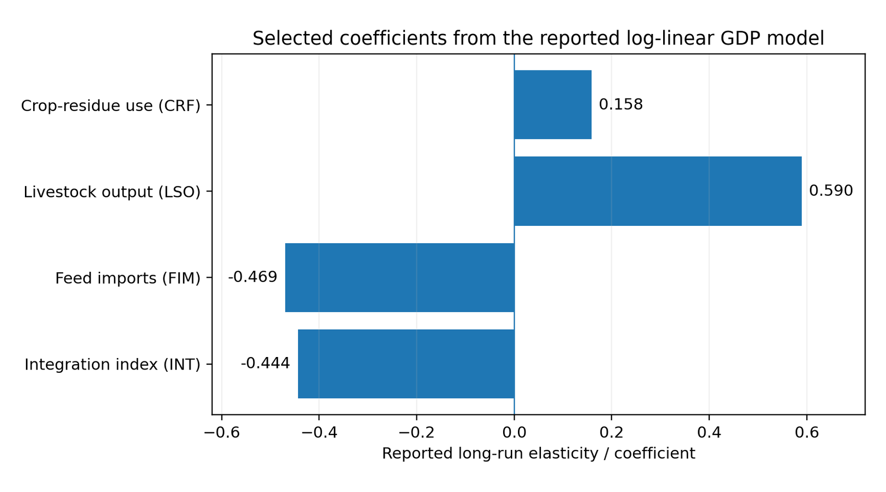

CHIATECH JOURNAL
SETEHEM · VOLUME 1 · ISSUE 1 · JULY 2026 · e021
PIONEER PUBLICATION · ACCEPTED ARTICLE · ORIGINAL RESEARCH ARTICLE · ENTREPRENEURSHIP & MANAGEMENT · AGRICULTURAL ECONOMICS · SUSTAINABILITY
Integrated Livestock Feed Zones, Crop-Residue Utilisation and Economic Growth in Nigeria, 1990–2025: Cointegration, Causality and Error-Correction Evidence
Dr. Iboro Tom IDIM
Department of Economics, University of Abuja, Abuja, Nigeria
Correspondence: ibotom5050@gmail.com
Article | Volume/Issue | Publication | ISSN | DOI |
|---|---|---|---|---|
e021 | 1(1) | Pioneer Issue · July 2026 | Pending assignment | Pending registration |
Abstract
Background: Nigeria produces large volumes of crop residues while livestock production remains constrained by feed costs, import dependence and uneven feed-and-fodder infrastructure. Objective: This study examined the long-run and short-run relationships among crop-residue utilisation for livestock feed, livestock output, feed imports, an integration index and Nigeria’s economic growth over 1990–2025. Methods: A quantitative longitudinal ex-post-facto design used annual secondary series compiled from national and international statistical sources. The reported econometric sequence included unit-root testing, Johansen cointegration, Granger-causality analysis, log-linear OLS estimation, an error-correction model and diagnostic/robustness checks. The harmonised estimation sample comprised 35 annual observations after source alignment. Results: The reported Johansen statistics supported multiple long-run relationships; the maximum-eigenvalue criterion indicated two cointegrating equations. In the log-linear GDP model, crop-residue utilisation was positively associated with GDP (B=.158, p=.0053) and livestock output showed a larger positive coefficient (B=.590, p<.001), while feed imports were negatively associated with GDP (B=−.469, p<.001). The integration index was also negative (B=−.444, p<.001), an unexpected result interpreted cautiously as possible transition cost, threshold behaviour or measurement error. The error-correction term was −.457 (p=.0012), implying about 45.7% annual adjustment toward long-run equilibrium. Conclusion: The results support crop-residue valorisation and domestic feed development as potentially important components of livestock-sector growth, but they do not justify simple extrapolation from coefficients to national GDP gains. Policy should prioritise feed-and-fodder infrastructure, data quality, crop-production stability and staged evaluation of integration investments.
Keywords: crop residues; livestock feed; economic growth; cointegration; error correction model; import substitution; agricultural value chains; Nigeria
1. Introduction
Feed is a central cost and productivity constraint in livestock systems. Nigeria’s current livestock strategy gives explicit attention to feed and fodder development, value-chain modernisation, market access and conflict-sensitive production. Within that policy environment, crop residues are economically relevant because materials that would otherwise be burned, discarded or underused can potentially be converted into feed inputs, reducing waste while supporting domestic livestock production.
The empirical question is not whether crop-livestock integration is desirable in principle, but whether measured changes in crop-residue use, livestock output and feed imports move with aggregate economic performance over time. The source study addresses this question with a time-series framework covering 1990–2025 and explicitly distinguishes short-run dynamics from long-run equilibrium relationships.
This journal article retains the reported econometric results while tightening their interpretation. In particular, Granger causality is treated as predictive precedence rather than philosophical proof of causation; a high R² in a small annual sample is not treated as validation by itself; and coefficient magnitudes are not mechanically extrapolated into large national GDP forecasts.
1.1 Research objectives
Test whether the core livestock-feed and macroeconomic series exhibit long-run cointegration.
Estimate the association of crop-residue utilisation, livestock output and feed imports with GDP in the reported log-linear model.
Examine short-run adjustment using an error-correction specification.
Assess implications for import substitution, feed-and-fodder investment and crop-production stability.
2. Materials and Methods
2.1 Design, data and variables
The study used a quantitative longitudinal ex-post-facto design and annual secondary data spanning 1990–2025. The source manuscript identifies the Central Bank of Nigeria, National Bureau of Statistics, Food and Agriculture Organization, World Bank and federal agricultural/livestock institutions as principal data sources. After harmonisation across series, the reported estimation sample contained 35 annual observations. Core variables included GDP, crop residue used for feed (CRF), livestock output (LSO), feed imports (FIM), an integration index (INT) and macroeconomic controls.
2.2 Econometric strategy
The analysis proceeded through stationarity testing, cointegration analysis, Granger predictive-causality tests, log-linear OLS, an error-correction model (ECM), foreign-exchange sub-models and diagnostic checks. The Johansen trace and maximum-eigenvalue statistics were read jointly because they did not identify exactly the same rank. The ECM was used only after evidence of long-run equilibrium relationships. Reported standard diagnostics included serial-correlation, heteroscedasticity, normality, functional-form and parameter-stability checks.
Stage | Technique | Purpose |
|---|---|---|
Time-series properties | ADF / PP (and KPSS in the study protocol) | Establish integration order and avoid spurious level regression |
Long-run relationship | Johansen cointegration; Engle–Granger as supplementary check | Test whether non-stationary series share stable long-run combinations |
Predictive direction | Granger causality / VAR-VECM framework | Assess whether lags of feed-sector variables improve prediction of GDP |
Long-run association | Log-linear OLS | Estimate elasticities / conditional associations |
Short-run dynamics | Error-correction model | Estimate immediate effects and speed of return toward long-run equilibrium |
Robustness | Specification and residual diagnostics | Assess whether inference is sensitive to model violations |
Table 1. Reported econometric workflow.
3. Results
3.1 Cointegration and predictive direction
The reported Johansen trace statistic rejected the null through 'at most 2', while the maximum-eigenvalue statistic supported rejection through 'at most 1'. Accordingly, the evidence indicates multiple cointegrating relationships, with the maximum-eigenvalue criterion identifying two. The source study also reports unidirectional Granger predictive relationships from crop-residue utilisation, livestock output and feed imports toward GDP. These results support temporal ordering within the model but should not be interpreted as experimental causal identification.
3.2 Long-run log-linear estimates
Predictor | Coefficient | p value | Interpretation retained for publication |
|---|---|---|---|
lnCRF: crop residues used for feed | 0.15815 | .0053 | Positive conditional association with GDP |
lnLSO: livestock output | 0.58954 | <.001 | Largest positive feed/livestock coefficient in the model |
lnFIM: feed imports | −0.46914 | <.001 | Negative conditional association; consistent with import-leakage hypothesis |
lnINT: integration index | −0.44376 | <.001 | Unexpected negative coefficient; requires caution and better measurement |
lnEXR: exchange rate | −0.03750 | .5383 | Not statistically distinct from zero in the reported model |
Table 2. Selected coefficients from the reported log-linear GDP model.

Figure 1. Selected coefficients from the reported long-run GDP model. Bars represent point estimates, not causal effects.
The reported model had R²=.9446 and adjusted R²=.9351. Given the relatively small annual sample and the large number of regressors, these fit statistics are interpreted as descriptive model fit rather than as evidence that the specification is complete or causal.
3.3 Error correction and short-run adjustment
The reported error-correction term was −0.45678 (p=.0012). Its negative sign and statistical significance are consistent with convergence toward the estimated long-run relationship: approximately 45.7% of a prior-period disequilibrium was corrected within one year. Short-run crop-residue use was also reported as positive but smaller than the long-run coefficient, supporting the interpretation that some benefits may materialise gradually.
3.4 External-sector and crop-stability results
The source study reports that a 1% increase in crop-residue utilisation was associated with a 0.346% decrease in feed imports and a 0.457% increase in processed-feed exports in the auxiliary foreign-exchange models. Crop-production variability was negatively associated with livestock output (approximately −0.235%) and foreign-exchange earnings (approximately −0.346%). These results link feed policy to both import substitution and supply stability, while remaining conditional on the study’s constructed measures and model specification.
4. Discussion
The positive CRF coefficient is consistent with a value-addition pathway in which residues acquire economic value when collection, processing, storage, quality control and market coordination allow them to substitute for more expensive feed inputs. The larger livestock-output coefficient reflects the direct and indirect linkages of animal production to processing, transport, retail and household demand.
The negative feed-import coefficient is consistent with an import-leakage interpretation, but it does not imply that all imports are harmful. Strategic imports can supply nutrients, genetics or inputs not efficiently produced domestically. The policy implication is therefore competitive domestic substitution where quality and cost are defensible, not blanket restriction.
The negative integration-index coefficient is the most important caution in the results. It may reflect transition costs, low initial scale, omitted factors, non-linearity or measurement error. A publication-ready interpretation must preserve this inconvenient finding rather than explain it away. Future evaluation should define integration with observable physical and financial indicators and test thresholds or lag structures.
Current federal livestock policy already places feed and fodder systems within a broader transformation agenda. The empirical findings reinforce the case for staged investment in aggregation, processing, storage, quality assurance, extension and market coordination, accompanied by explicit monitoring of feed costs, animal productivity, import displacement and producer income.
5. Policy Implications
Priority | Recommended action | Evaluation metric |
|---|---|---|
Residue aggregation | Local collection hubs, baling/grinding and storage close to crop clusters | Tonnes recovered; delivered feed cost; spoilage rate |
Feed quality | Standards, laboratory testing, formulation guidance and certification | Nutrient compliance; rejection rate; animal performance |
Processing finance | Asset finance and credit for mills, pelletisers, transport and storage | Capacity utilisation; cost per tonne; repayment performance |
Crop stability | Irrigation, resilient varieties, insurance and storage | Residue supply variability; livestock feed-price volatility |
Import substitution | Target inputs where domestic alternatives meet cost and quality thresholds | Import bill; domestic market share; producer margin |
Programme evaluation | Phase investments and publish annual data on costs, output and welfare effects | Pre/post outcomes with transparent counterfactual or benchmarking design |
Table 3. Evidence-linked policy priorities.
6. Limitations
The study uses a small annual time-series sample and several constructed or aggregated variables. The integration index is especially important because its unexpected sign may indicate measurement or functional-form problems. The underlying harmonised dataset and complete estimation code were not included in the journal source package, so this article reports the supplied econometric outputs rather than independently re-estimating them. Structural breaks, data revisions and endogeneity may remain despite the reported diagnostics. Granger causality indicates predictive ordering, not definitive causal identification.
7. Conclusion
The reported time-series evidence supports a long-run relationship linking crop-residue feed use, livestock-sector performance and Nigeria’s macroeconomy. Crop-residue utilisation and livestock output were positively associated with GDP, feed imports were negatively associated, and the error-correction term indicated substantial annual adjustment toward long-run equilibrium. At the same time, the negative integration-index coefficient and small sample require disciplined interpretation. The strongest policy case is therefore not a promise of mechanically calculated GDP gains, but a programme of feed-and-fodder infrastructure, domestic value addition, crop-supply stabilisation and transparent performance evaluation.
Declarations
Declaration | Statement |
|---|---|
Ethics | Not applicable: the study used secondary macroeconomic and sectoral time-series data and did not recruit human participants. |
Funding | No external grant funding is declared in the supplied manuscript. |
Competing interests | The author declares no competing interests. |
Data availability | The analysis is based on secondary series identified in the manuscript as originating from CBN, NBS, FAO, World Bank and federal agricultural/livestock sources. Reproducibility would be strengthened by public deposition of the harmonised annual dataset and estimation syntax. |
AI-assisted tools | AI-assisted editorial tools may be used for language, formatting and consistency checks under human author/editor control. The author remains accountable for the econometric results and source data. |
Related version | The article is a condensed and editorially harmonised journal version of the author's longer 1990–2025 livestock-feed-zone study. |
References
Central Bank of Nigeria. (2025). Statistical Bulletin. Abuja, Nigeria: CBN.
Engle, R. F., & Granger, C. W. J. (1987). Co-integration and error correction: Representation, estimation, and testing. Econometrica, 55(2), 251–276.
Federal Ministry of Livestock Development. (2025). National Livestock Growth Acceleration Strategy (NL-GAS): Feed, fodder and livestock value-chain priorities. Abuja, Nigeria.
Food and Agriculture Organization of the United Nations. (2025). FAOSTAT statistical database. Rome: FAO.
Granger, C. W. J. (1969). Investigating causal relations by econometric models and cross-spectral methods. Econometrica, 37(3), 424–438.
Johansen, S. (1991). Estimation and hypothesis testing of cointegration vectors in Gaussian vector autoregressive models. Econometrica, 59(6), 1551–1580.
Johansen, S. (1995). Likelihood-based inference in cointegrated vector autoregressive models. Oxford University Press.
National Bureau of Statistics. (2025). Selected agricultural, trade and national accounts statistics. Abuja, Nigeria.
Romer, P. M. (1986). Increasing returns and long-run growth. Journal of Political Economy, 94(5), 1002–1037.
Solow, R. M. (1956). A contribution to the theory of economic growth. Quarterly Journal of Economics, 70(1), 65–94.
World Bank. (2025). World Development Indicators. Washington, DC: World Bank.
Suggested citation: Idim, I. T. (2026). Integrated livestock feed zones, crop-residue utilisation and economic growth in Nigeria, 1990–2025: Cointegration, causality and error-correction evidence. CHIATECH JOURNAL, 1(1), e021. DOI pending registration.
© 2026 Iboro Tom IDIM. Author retains copyright. Published by CHIA TECH SOLUTIONS AND RESOURCES LIMITED under CC BY 4.0.